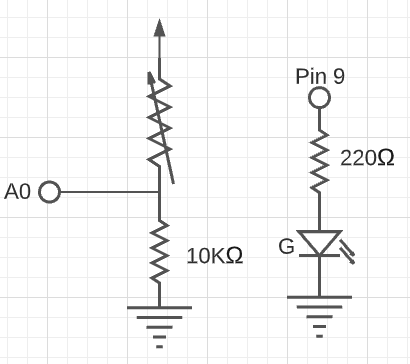
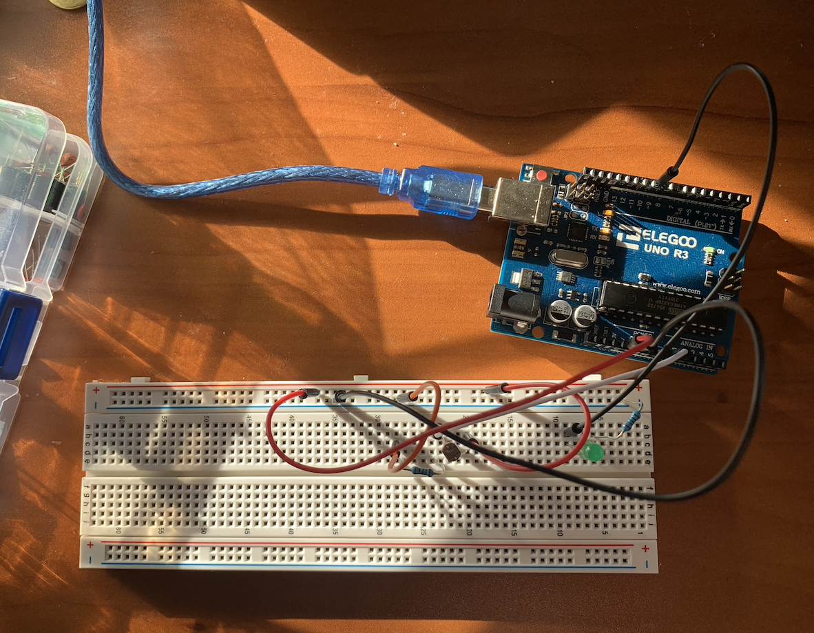

My Assignment 3!


Here is all the documentation for assignment 3. For this assignment I had one green LED and a photoresistor!
Schematic
These are the schematics for my photoresistor and my green LED. For my voltage divider I used a 10k ohm resistor to limit the amount of current and to limit my range of measurements. For my green LED I used a 220 ohm resistor. You can see my math below using Ohms law to determine the green LED resistor amount.
5V - 1.8V drop for green
3.2V
3.2/.02 = 160 -> 220 ohm resistor

`Circuit
Here is my breadboard and arduino.

Firmware
This is my code that tracks the input of the photoresisotr and controls the LED.
void setup() {
Serial.begin(9600); // configure serial
pinMode(9, OUTPUT); //initialize LED
}
void loop() {
int sensorVal = analogRead(A0); //assign variable to input on analog pin 0
int outputVal = map(sensorVal, 0, 1023, 0, 255);// map sensorVal to numbers between 0 and 1023- these numbers by default worked so I didn't end up changing them
if(sensorVal < 700){ // if photoresistor is covered, LED turns on
analogWrite(9, outputVal);// pin 9 turns to level of outputVal
}
else if(sensorVal > 600){// if photoresistor is not covered, LEF turns off
digitalWrite(9, LOW);
}
Serial.print("Sensor Value:"); //formatting to serial print
Serial.println(sensorVal); //prints out sensor value
delay(1000); //taken from in-class exercise, delay for stability
}